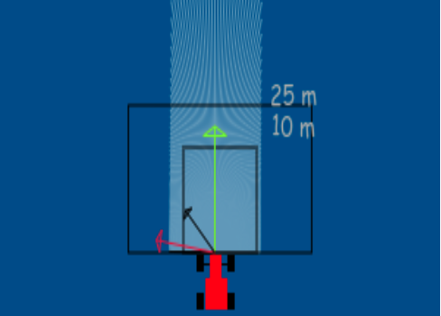
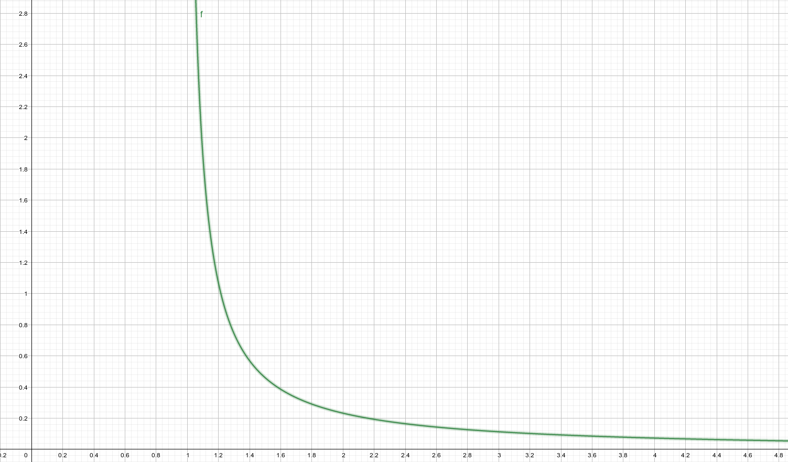
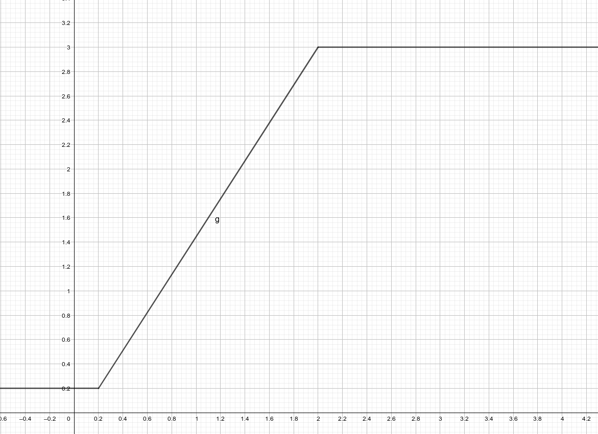

Vectors involved
To implement this algorithm, 3 vectors have to be calculated: An atractive(green), a repulsive(red), and the total vector(black).
Repulsive vector
In order to calculate the repulsive vector, each laser measure has to be scaled according to the distance measured, and then all of them are added up.
A hyperbole is in charge of scaling each measure:
The closer the obstacle is, the more it influences the sum, but with two thresholds: if its to far, it returns 0. If it is in a certain close range, it returns the same large value(does not tend to infinite). Moreover, I only kept the part of the vector that is perpendicular to the direction of movement. The other component is set to 0.
Atractive vector
In order for atractive vector to be calculated, the absolute coordinates of the car must be subtracted from the absolute coordinates of the goal, and if the new coordinate system is rotated, then the vector has to be rotated with opposite sign, to take that into account.
Then, the resulting value has to be scaled properly, using the following function:
Total vector
Once the vectors have been calculated, they are added with a individual weight. This constants, like everything else, have to be tweaked through trial and error.
Commanding to the motors
Now we have a vector that indicates where the robot should go, but the motors need a speed command, so we need to translate the vector to motor commands.
For the angular velocity, I implemented a pd controller, where the error was the angle between the vector and the current direction of movement. The linear velocity was kept constant.